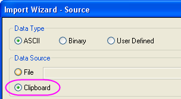
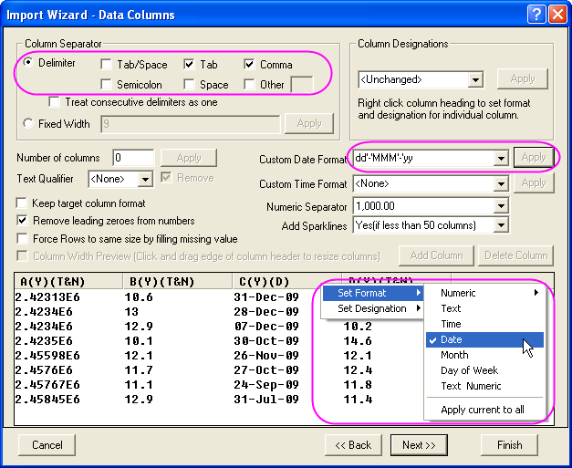
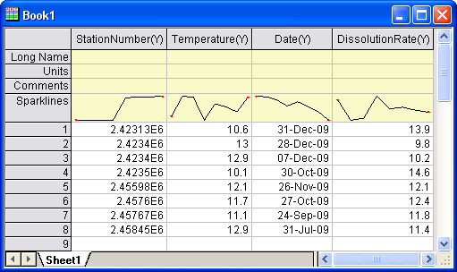

Importassistent zum Importieren von Daten aus der Zwischenablage verwenden
ImpWiz-ClipboardData
Zusammenfassung
Sie können den Importassistenten zum Importieren von Daten aus der Zwischenablage verwenden und dabei seine flexiblen Anpassungseinstellungen nutzen. Natürlich können Sie Daten aus der Zwischenablage direkt in ein Arbeitsblatt einfügen, aber die Daten in dem Arbeitsblatt sind möglicherweise ungeordnet, wenn die Daten in der Zwischenablage nicht gut organisiert sind.
Nehmen Sie beispielsweise an, dass die Zwischenablage 2 Spalten mit Daten enthält und jede Zeile durch ein Komma getrennt wird. Wenn Sie die Daten direkt in einem Arbeitsblatt einfügen, werden die zwei Spaltendatensätze in einer einzelnen Spalte des Arbeitsblatts angezeigt und nicht in zwei Spalten.
Glücklicherweise ist es möglich, mit dem Importassistenten den Import benutzerdefiniert anzupassen und den Importvorgang zu vereinfachen. Im Folgenden werden einige besonders wichtige Funktionen aufgeführt, die zum Importieren der Daten aus der Zwischenablage verwendet werden können.
- Sie können Trennzeichen für die Spalten setzen, um zu verhindern, dass die Daten ungeordnet im Arbeitsblatt angezeigt werden.
- Legen Sie die Zuordnungen der Spalten fest und passen Sie die Datenformate benutzerdefiniert an wie beispielsweise das Format des Datums.
- Es sind auch weitere Anpassungsoptionen verfügbar wie das Zuweisen von Spaltennamen oder das Speichern eines Importfilters für das zukünftige Importieren von ähnlichen Daten.
Bitte beachten Sie, dass der Importassistent Ihnen beim Verstehen dieses Hilfsmittels helfen kann.
Was Sie lernen werden
Der folgende Abschnitt zeigt Ihnen, wie Sie:
- Daten aus der Zwischenablage mit Hilfe des Importassistenten in Origin importieren,
- Kurznamen für das Arbeitsblatt zuweisen, in das die Daten importiert werden sollen,
- Trennzeichen für Spalten festlegen,
- das Format der Datumsdaten benutzerdefiniert anpassen.
Schritte
- Wählen Sie alle Zeilen, einschließlich der Überschriftenzeilen, in dieser Tabelle aus.
- Erstellen Sie ein neues Projekt in Origin und klicken Sie auf die Schaltfläche Importassistent auf der Symbolleiste Standard (oder wählen Sie Daten: Aus Datei importieren: Importassistent), um den Dialog zu öffnen.
- Wählen Sie auf der ersten Seite (Quelle) des Assistenten die Option Zwischenablage aus der Gruppe Datenquelle.
- 
- Klicken Sie dann auf die Schaltfläche Weiter, um zur Seite Headerzeilen zu gelangen und dort den Kurznamen für das Arbeitsblatt, in das die Daten importiert werden sollen, festzulegen. Wählen Sie 1 aus der Auswahlliste Kurzname und dann <Keine> aus der Auswahlliste Langname.
- Klicken Sie zweimal auf die Schaltfläche Weiter, um zur Seite Spalten mit Daten zu gelangen, die Trennzeichen für die Spalten festzulegen und das Format der Datumsdaten benutzerdefiniert anzupassen. Bitte führen Sie folgende Schritte auf dieser Seite durch:
- Aktivieren Sie die Kontrollkästchen Register (Tab) und Komma in der Gruppe Dateistruktur, um Tab und Komma als Trennzeichen zu verwenden.
- Geben Sie das benutzerdefinierte Datenformat dd'-'MMM'-'yy in das Bearbeitungsfeld Benutzerdefiniertes Datumsformat ein und klicken Sie auf die Schaltfläche Anwenden, um die Einstellung anzuwenden.
- Klicken Sie mit der rechten Maustaste auf die Überschrift der Spalte Datum und wählen Sie Setze Format: Datum.
- 
- Klicken Sie auf die Schaltfläche Fertigstellen, um die Daten aus der Zwischenablage in das Arbeitsblatt zu importieren. Die Daten im Arbeitsblatt sollten folgendermaßen aussehen.
- 
|
Hinweis:
Der Importassistent bietet darüber hinaus noch viele weitere Möglichkeiten. Weitere Einzelheiten finden Sie unter Importassistent.
|
Die Testdaten
| StationNumber,Temperature |
Datum |
DissolutionRate |
| 2.42313E6,10.6 |
31-Dec-09 |
13.9 |
| 2.4234E6,13 |
28-Dec-09 |
9.8 |
| 2.4234E6,12.9 |
7-Dec-09 |
10.2 |
| 2.4235E6,10.1 |
30-Oct-09 |
14.6 |
| 2.45598E6,12.1 |
26-Nov-09 |
12.1 |
| 2.4576E6,11.7 |
27-Oct-09 |
12.4 |
| 2.45767E6,11.1 |
24-Sep-09 |
11.8 |
| 2.45845E6,12.9 |
31-Jul-09 |
11.4 |